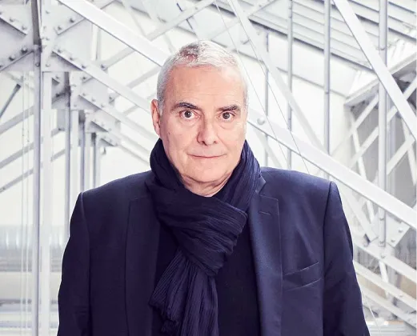

Exploration Architecturale : Le Monde de Dominique Perrault
Dominique Perrault : Une figure majeure de l’architecture française
Figure emblématique de l'architecture française, Dominique Perrault est professeur à l'École Polytechnique Fédérale de Lausanne, conférencier en France et à l'étranger, et membre du Conseil scientifique de l’Atelier International du Grand Paris depuis 2012.
Des Réalisations Marquantes à Travers le Monde
Après avoir remporté le concours de la Bibliothèque Nationale de France en 1989, il a réalisé, entre autres projets, le Vélodrome et la piscine olympique de Berlin, la quatrième et cinquième extension du siège de la Cour de justice de l'Union européenne à Luxembourg, le stade olympique de tennis de Madrid, l'université Ewha Womans ou la tour Fukoku à Osaka.
Une Présence Artistique Internationale
Ses travaux sont exposés dans de grands musées à travers le monde. Une exposition personnelle présentant l'ensemble de son travail a eu lieu au Centre Georges Pompidou à Paris en 2008. Il a également été nommé commissaire de la section architecture du pavillon français à la Biennale de Venise en 2010.
Engagement dans la Réhabilitation du Patrimoine
En parallèle, Dominique Perrault dirige d'importants projets de réhabilitation patrimoniale, notamment ceux de l'hippodrome de Longchamp à Paris, du pavillon Dufour à Versailles et de La Poste du Louvre à Paris.
Nouveaux Horizons Architecturaux
Au printemps 2014, Dominique Perrault a inauguré la plus haute tour d'Autriche à Vienne, la DC Tower 1, icône du nouveau quartier d'affaires, ainsi que le Grand Théâtre des Cordeliers dans la ville historique d'Albi, dans le sud de la France.